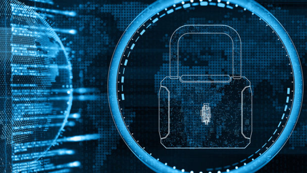

My name is Saul Guzman, and I am 20 years old. I was originally born in Mexico but have now been living in Chicago for the past 18 years of my life. I graduated from Sarah E. Goode STEM Academy high school in 2024, and am now a third-year student here at Illinois Tech pursuing a bachelor's degree in Applied Cybersecurity and Information Technology. I always knew I wanted to work in the cybersecurity or network field in specific, but I initially enrolled as a Computer Science major for my first year before switching to my current major.

Ever since I was a kid, I was fascinated by computers, especially because I grew up watching movies that portrayed hacking and computer skills in exciting ways. I got my first computer for school in late elementary going into middle school, and even though I didn't use it for anything particularly technical at the time, it still felt like one of the coolest things ever. As I got older, I became more aware of online security, and that's when my interest in cybersecurity really started to grow from researching the topic. Ever since middle school, it has been a goal of mine to work in a cybersecurity-related field, which brings us to the present day.
To me, cybersecurity feels like the perfect middle ground that still involves levels of physical work, coding, analysis, and problem-solving without one particular aspect being overwhelmingly focused on. Beyond that balance, cybersecurity has become essential in our everyday lives, especially as more of our personal information, communication, and business activity depends on secure digital systems. It also helps that cybersecurity careers offer flexibility in schedule and location, along with strong job stability and pay for something I would genuinely enjoy doing as more than just a duty or job.